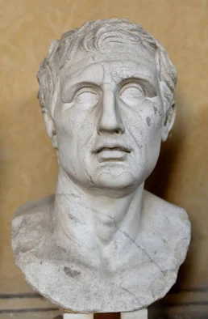

Menander (c. 342 - 291 BC)

Menander (c. 342–290 BCE) was an ancient Greek playwright from Athens and the most famous representative of New Comedy, a style of Greek theatre that focused more on everyday life, family relationships, and ordinary people than on political satire. He wrote over a hundred comedies and won first prize at the Lenaia festival several times. His plays were highly admired in the ancient world, and he became one of the most popular comic writers of his time.
Unlike earlier comic playwrights, Menander often explored the problems of everyday people, including love, marriage, family conflicts, misunderstandings, and differences between social classes. His characters were usually ordinary men and women dealing with situations that audiences could recognize from their own lives. Although his works were considered lost for many centuries, parts of them were eventually rediscovered in ancient papyrus manuscripts found in Egypt. One of his most important plays, Dyskolos (The Grouch), was recovered in a nearly complete form and helped modern readers understand his style. Menander also influenced Roman playwrights such as Plautus and Terence, whose adaptations helped preserve elements of his comedy and shaped the development of later European theatre.
Famous Plays:
- Dyskolos - Δύσκολος (317 BC)
- Samia - Σαμία
- Epitrepontes - Ἐπιτρέποντες
- Perikeiromene = Περικειρομένη